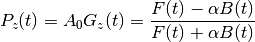
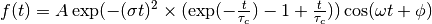
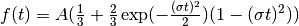
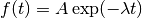
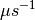
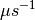
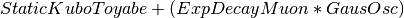

Table of Contents
When launched, the Muon Analysis GUI defaults to the Home tab. This tab allows:
To load a file either: Browse or Load Current Run or simply type a run number (assuming you have defined the directory(ies) in which your files are stored) When typing a run number, or using the Load Current Run option, first select the desired instrument from the dropdown list.
To demonstrate:
- Select MUSR in the instrument drop-down menu
- Type run number 24563 in the Loading section and press enter, note this can only be done if the correct reference material folder was selected in Getting Started.
- This process shown in Figure 2(a), a plot of the data should appear similar to the one in Figure 2(d).
NB the plot’s appearance will vary based on the Time axis and Rebin data values as described later in this section and Other Mantid Functions and Basic Data Manipulation

Figure 2(a): How to load a workspace in the Muon Analysis GUI.
Regardless of the data input method used, the Time Zero ( ) and First Good Data ()
values are automatically updated. These values will have been determined by the instrument scientist during instrument calibration periods, and are stored in the header
block of the raw .nxs data files, which are saved once a measurement is finished. Once a data file has been successfully read, a new plot window like the one shown in Fig. 2(b) will appear.
) and First Good Data ()
values are automatically updated. These values will have been determined by the instrument scientist during instrument calibration periods, and are stored in the header
block of the raw .nxs data files, which are saved once a measurement is finished. Once a data file has been successfully read, a new plot window like the one shown in Fig. 2(b) will appear.
NB: when browsing for files multiple files such as “15190,15193” or a string like “15190-3” can be selected (the latter would load runs from 15190 to 15193). The selected files will each be loaded into a different workspace.
When a workspace is opened using the Muon Analysis GUI, a plot of the data automatically opens with it. For measurements not taken in transverse fields, this plot is set to show the asymmetry by default, which is the normalised ratio of the Forward (F) and Backward (B) detector banks’ positron counts; as given by the equation:
(1)

Figure 2(b): The default plot window for MUSR00024563 showing raw (unbinned) data for the long pair asymmetry.
However, data collected only in the Forward, or Backward, detector banks can be viewed alone by adjusting the Group/Group Pair option.
To try this, follow the instructions below:
- The MUSR00024563 file should already be loaded, if not do so now as described above
- Go to the drop-down menu in the Groups and Pairs section of the home tab and change its setting from the default (long) to just the backward (bwd) or forward (fwd) detector arrays
- Observe and consider the difference in the plot. This is shown in Figure 2(c).

Figure 2(c): How to change the detector grouping using the Muon Analysis GUI.
Though the plot type shows asymmetry by default it can be changed to show positron counts against time using the Plot Type drop-down menu, which can be found in the Plotting section of the Home tab. To demonstrate this, follow the example below.
- MUSR00024563.nxs should still be loaded from the previous task; if not, re-load the file.
- Ensure that the Group / Pair drop-down menu is set to either ‘bwd’ or ‘fwd’, as the plot type will not change if this is set to ‘long’.
- Underneath the Plot Data section, in the Plot Type box change the type from ‘Asymmetry’ to ‘Counts’. There should be a change in the data plot. See Figure 2(d) for the process.

Figure 2(d): How to change the plot type using the Muon Analysis GUI.
Plot options (such as symbol type, lines etc.) are described in Overlaying and Styling Plots section of Other Mantid Functions and Basic Data Manipulation.
In addition, should data have been collected using differed timing periods (as one would during an RF experiment, for example), the data collected during each separate time period can also be viewed separately (again for either the Forward and Backward detector arrays) by adjusting the period number.
When plotting data according to (1) the default alpha value is 1. An accurate alpha value can be determined using the Guess Alpha option found in the Grouping tab.
Data can be re-binned via the home tab by using the Rebin section. The options are None for no binning, Fixed to use a given value (entered in the Steps box to the right) or Variable, for binning with various steps. When entering values in the Steps box, do so as for parameters in the Rebin algorithm.
For example, to set the plot to a fixed bin-width of choice, follow the instructions below
- Load HIFI run number 00062798 (as described above).
- In the rebin section of the Home tab, use the drop-down menu and change its value from None to Fixed.
- In the box adjacent to it, input a suitable value - 10 is suggested - and press enter. This will cause a new workspace, HIFI62798; Pair Asym; long; Rebin; #1, to appear in HIFI62798 Pairs.
- The effect of rebinning is best viewed on only a certain portion of the data, use the Figure options as described in the Overlaying and Styling Plots section of Other Mantid Functions and Basic Data Manipulation
- Navigate to, HIFI62798; Pair Asym; long; Rebin; #1, then right click it and select Plot > Overplot spectrum with errors, the rebinned data should appear in orange over the unbinned dataset. If this does not happen, check the Loading Data section of Other Mantid Functions and Basic Data Manipulation and ensure the plotting has been carried out correctly. An example of this process is shown in Figure 5(c) below.

Figure 5(c): How to re-bin data, in this example from a width of 10 to 20 on the HIFI00062798 dataset.
A summary of each input field in the Home tab, and a description of its function(s) can be found in Muon Analysis (old) under Home.
The Grouping tab allows:
The Grouping options are shown below

Figure 4(a): The Grouping Options tab of the Muon Analysis Interface.
Standard detector groupings are usually loaded when a data file is opened, which each incorporate one half of the total detectors of the equipment being used. For example, for the EMu spectrometer detectors 1 – 48 and 49 - 96 are automatically assigned to the forward and backward detector arrays.
Different detector grouping configurations can be entered manually, as can Group Pairs. A Group Pair is a combination of two different detector groups. For example, the default detector groups fwd and bwd are in a pair called ‘long’. This combines the detectors from both groups in order to be able to view them together, for example for the MuSR equipment this default case means viewing all 64 detectors. A detector group pair can include any two groups found in the group table.
To try assigning new detector groups and pairs with the MUSR00024563 file (see Home for how to load files), follow the instructions below. For assistance, see figures 4(b) and 4(c).
- First, go to the Grouping tab in the mantid muon GUI.
- Under the box labelled ‘Description:’, there is a table of the existing groups, with ‘Group Name’, ‘Detector IDs’ and ‘N Detectors’ as columns. ‘bwd’ and ‘fwd’ should already be saved as groups.
- In the blank space under the existing group names, right click and enter the name ‘sample_fwd’. This will be one of our new groups.
- Assign this new group Detector IDs of 1-2, in the blank space in the same row. Ndet will then fill automatically.
- Repeat this process to also add a group called ‘sample_bwd’ with Detector IDs of 10-11.

Figure 4(b): How to add a new detector group using the Muon analysis GUI.
NB any string of numbers can be defined as Detector IDs, so long as they are within the number of detectors on the equipment used. E.g. ‘1,3-5,15,17-18’ would be valid.
- At the bottom of the tab there should be a table containing the default ‘long’ pair details. The columns in this table read ‘Pair Name’, ‘Group 1’, ‘Group 2’, ‘Alpha’, and ‘Guess Alpha’.
- In the blank space under ‘long’ in the Name column, right click and enter a name for the new pair, such as ‘sample_long’.
- In the same row as the new pair, in the Forward drop down list select ‘sample_fwd’ and the Backward list select ‘sample_bwd’. To update the Alpha value, click Guess Alpha. This process is shown in figure 4(c) below.

Figure 4(c): Adding a new group pair in the Muon Analysis GUI.
Once defined, these new user grouping options propagate through the Muon Analysis tabs. For example, in the Home tab, the options under Group/Group Pair are automatically updated to include user defined detector configurations. From there, the new groups can be plotted as they would be for the default long, bwd and fwd groups.
Finally, alpha can be determined for any given detector pairing (via the analysis of
transverse field data) by clicking on Guess Alpha. Click on a specific Group Pair name to
select it. The alpha value column is automatically updated. The value in the column is
applied to all subsequent data reduction when asymmetry plots are desired. The detector calibration
factor,  is described in more detail in The Basics of Data Reduction.
is described in more detail in The Basics of Data Reduction.
For a summary of the controls and tables in the Grouping tab, see the Grouping Options section in Muon Analysis (old).
The Fitting tab allows the user to:

Figure 7(a): The Fitting tab options.
MantidPlot comes with a number of pre-compiled fitting functions. Further functions may be compiled and installed or, alternatively, user specific functions can be defined within the fitter. A number of fit functions have been programmed which are specific to the analysis of muon spectra.
Some of the muon specific functions in MantidPlot include:
| ExpDecayOsc |  |
| GausOsc |  |
| Abragam |  |
| StaticKuboToyabe |  |
| StretchExpMuon |  |
| GausDecay |  |
| ExpDecayMuon |  |
| MuonFInteraction | Implements equation number (3) from Brewer et al, Physical Review B 33(11) 7813-7816, to model the muon response under the formation of the F  F species. F species. |
| DynamicKuboToyabe | Fitting for the parameters  , ,  and and  (the initial asymmetry, relaxation rate and hop rate, respectively) using numerical integration techniques. (the initial asymmetry, relaxation rate and hop rate, respectively) using numerical integration techniques. |
Where:
 and are in 
and are in  is in radians
is in radians is in
is in 
 is in
is in  is in
is in The compilation of custom functions is possible using C++ or Python, however this is beyond the scope of this tutorial. Detailed instructions for completing this for a 64-bit Windows platform can be found at http://www.mantidproject.org/Writing_a_Fit_Function and https://www.mantidproject.org/Introduction_to_Python_Fit_Functions, for fit functions in C++ and Python respectively.
To select a function right click in the white box beneath where ‘Fit Status’ is written and select Add Function.
A new window will appear with several drop-down titles; ‘Background’, ‘Calibrate’ etc.; this is the MantidPlot-Fit dialog box, from which one can select a function to use.
Follow the following instructions for an example of fitting:
- Load the HIFI00062798 file from the reference material folder in the Home tab.
- Open the Fitting tab and right click in the functions box and select Add Function.
- Right click and go to the Muon drop-down title in the MantidPlot-Fit dialogue box.
- Select ExpDecayOsc and press the fit button. This process is shown in figure 7(a), and the resulting plot should resemble Figure 7(b).

Figure 7(b): How to add a function to a data set.
NB: To remove the function, right click on the function name and select Remove.
Once a function has been selected its name will appear in the Property column. To examine a function’s fit parameters, click on the small arrow beside the function name to expand the entry. Generic properties for performing the fit itself - such as start and end times, what minimizer to use etc. are located in the table below the functions table.
The parameters of a function can be adjusted in order to give the user maximum control over the fitting result of the data. These parameters can be adjusted before or after fitting initially, however it will require re-fitting for the changes to apply. Factors such as the time range fitted and fixing constraint boundaries can be adjusted.
Once the user is happy with the initial fit parameters, clicking Fit will fit the chosen function to the data. The fit parameters will then be updated.
To illustrate this:
- If not already done, load the HIFI00062798 file and add ExpDecayOsc function (see above for instructions).
- Adjust the fit limits in the lower table, for instance set start and end times of 0.2 and 12
- Click on the large Fit button top of the tab. This process is shown in Figure 7(c). Note that a better fit can be achieved if Alpha is guessed via the Grouping tab.
- The resulting plot should look like Figure 7(d).

Figure 7(c): How to change the fitting scale of a function.

Figure 7(d): The result of fitting function ‘ExpDecayOsc’ to HIFI00062798. The fit is shown in orange, while the green line indicates the difference between it and the data.
Each fit parameter can also be bound by certain fit limits (+/- 10% of its starting value, +/- 50% or a custom value), fixed at a specific user determined value, or tied together using some functional form.
To demonstrate setting bound limits:
1. Go to the function name and ensure the top down arrow is clicked so all fit parameters are visible. 2. Right click the parameter ‘A’ and select Constraints > 50%. The parameter, ‘A’, now has both of its’ upper and lower bounds fixed at 50%.
Data will sometimes require a function which is made up of multiple other functions, these combinations can be through addition or multiplication. To create a fit function involving adding and multiplying functions, follow the examples below.
- Load the EMU00019631.nxs file
- Add the function StaticKuboToyabe to the data, using the method from Using Fit Functions.
- Repeat the same method to add a second function, ExpDecayMuon, to the same data set. Simply adding a function creates a composite where all functions are summed. See Figure 7(e) for the process.

Figure 7(e): How to add two functions together.
- At this point, it is possible to fit the composite function to the data. Do so now, and consider the quality of the fit between from X=0 and X=12 (see Overlaying and Styling Plots in Other Mantid Functions and Basic Data Manipulation for changing plot limits).

Figure 7(f): A plot of the ExpDecayMuon and StaticKuboToyabe functions added together and fitted to EMU19631.
- It should be clear that the sum of these functions does not properly model the oscillations in the data set, to rectify this a product function can be used.
- Add the ProductFunction function (from the General function type), and remove ExpDecayMuon by right clicking on it and selecting remove function.
- Right click on the newly added ProductFunction and add two functions to it - ExpDecayMuon and GausOsc.
- The total function now consists of . (The perceptive reader may have noticed that the same effect can be achieved by adding StaticKuboToyabe and GausOsc, this is true, however it would not demonstrate the use of the ProductFunction)
- Fit the new function to the data, note that Chi squared has decreased from 6.844 to 1.02 - the new fit function is a much better fit to the data. (Note: for a view of the plot with only this fit, plot the workspace ‘EMU19631; Pair Asym; long; MA; Fitted; StaticKuboToyabe, Productfunction’)

Figure 7(g): How to add a function which is a product of two other functions to a third.
If several data sets have been loaded, the user can choose which one to fit by using the arrows or drop-down menu next to ‘Select Workspace’ located above ‘Fit Status’.
NB: when scrolling through a list of data sets to fit, select the entry with same name as that shown at the top of the data plot window. For example, to fit the data shown above one would select ‘EMU19631; Pair; long; Asym; #1’.
Multiple workspaces can be selected in different combinations using the ‘Select data to fit’ menu. This is located to the right of the Single, Sequential and Simultaneous Fit options. Selecting many workspaces is useful for when using the sequential option, which allows Mantid to fit one function with a consistent set of parameters to a range of data sets.
Follow the instructions below in order to sequentially fit a function to a range of data.
- Load the data sets from EMU00019631-EMU00019634.
- Set up a function where StaticKuboToyabe and ExpDecayMuon are added together.
- Under the ‘Fit’ button, check the circle labelled Sequential Fit.
- To make a custom selection of data to fit, click the Select data to fit button; the check boxes in the menu which opens allows data to be selected. For this example, select the four ‘Pair Asym; long’ data sets loaded in step 1.
- To confirm the choice of data and leave the menu, click ‘Select’ at the bottom left of the window, the data can then be fitted by pressing the Fit button as before. Note that the GUI currently plots all data to a single window, which may not be ideal for sequential fits, see Loading Data in The Basics of Data Reduction to find out how to instead plot data directly from the workspace.

Figure 7(e): How to use sequential fit on multiple data sets.
For more specifics on each option in the Fitting tab, see the Fitting section of Muon Analysis (old)
The Results tab allows the user to:
Figure 8(a): The Results tab options.
In the example above, the user has chosen to create a results table called “ResultsTable”. When the Output Results button is clicked, the resulting table will appear in the “Workspaces” section of the main Mantid window. From here the data can be explored and plotted as one would with any data in a Mantid workspace. The data contained in a results table is determined by the contents of the Values and Fitting Results sections (in the example above these are empty; no data has been fitted, so there are no workspaces available for the Fitting Results section).
In the Values sections, the user can choose which Log Values to include in the results table, these values are data from the instrument such as run number, sample temperature etc. which are taken from the workspaces in the Fitting Results section.
NB even if a workspace from the Fit Result table has not been selected (via the checkbox), the types of Log Value it contains will still be present in the Values table. This does not mean they will be included in a produced results table.
The Fit Results section allows the user to choose which workspaces to use Log Values from - these can be either individual fits, or a sequential/simultaneous fits. The first option in this section is the Function Name drop-down menu, selecting a certain function in this menu will show all the workspaces which have had this function fitted to them in the table below. By default, checking the box next to a workspace in this table means its Log Values will be present in the results table. This can be changed with the Include/Exclude option (if Exclude is selected from the drop-down menu, checked workspaces will be the only ones not included in the table). The view can also be customised to only show selected workspaces.
As an exercise, follow the instructions below in order to produce a results table for a single individual or sequential fit.
- Load the HIFI00062798 file from the reference folder, guess alpha as described in Grouping then fit the ExpDecayOsc function to it. To instead demonstrate a sequential fit table, load the EMU00019631-4 files, don’t guess alpha, and then perform a sequential fit of ExpDecayOsc on those files. (See Using Fit Functions for instructions on single and sequential fits.)
- In the Results tab, the default individual fit table should already be set up. Check that the Function Name and workspace(s) selected in the lower part of the tab show the fit function and data used so far, respectively.
- Use the table in the ‘Log Values’ section to select parameters to include in the results table. This is done by checking the box next to them - try this now for run number and Temp_Sample.
- Pick a name for the table, then click Output Results. See figure 8(b) for the process for an individual fit, and 8(c) for sequential.
- To view a table, right click it in the workspaces pane and Show Data.

Figure 8(b): How to create a results table from a single individual fit.

Figure 8(c): How to create a results table from a sequential fit.
Once a results table has been created, there are now different sets of parameters available for individual analysis. In Mantid, it is possible to plot different parameters against each other, to see the relationship between the two.
Follow the instructions below in order to plot a graph from parameters in a Results Table.
- Files EMU00019631.nxs to EMU00019634.nxs should already have been loaded, sequentially fitted and a Results Table produced from them during the last section. If not then load the files, fit and produce a table.
- This example plots Temp_Sample against Lambda, which should automatically be assigned to the X and Y axes by Mantid (labelled X1 and Y1 respectively) click on Temp_Sample to select it.
NB If data is not automatically assigned to the desired axes this can be changed manually. As an example, if in step 2. Temp_Sample was not already assigned to X, it could be right clicked after selection and then ‘Set as X’. This process is shown in 8(d). There are also other options such as to assign data to the Y axis, or Y error.
- Next, hold down the ‘Ctrl’ key and click on the Lambda column to select this column as well as Temp_Sample.
- Right click one of the columns and follow Plot > Line and Symbol. This will bring up a plot of Temp_Sample on the X axis and Lambda on the Y axis. See Figure 8(d) for the process.
- The axis titles may not be entirely correct, so it may be best to change them. To do this, just double click the title and re-write it.

Figure 8(d): How to plot a graph from two parameters of a results table.
For more details on the Results Table tab, see the corresponding section of Muon Analysis (old)